Recap
- We learned how to calculate induced stresses in the ground produced by external loads.
- We learned how to multiple loads using the superposition principle.
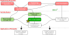
Contents
- Definition of consolidation
- Primary consolidation
- Oedometer/consolidation test
- Virgin and reloading compression
- Stress history
- Settlement in multilayered systems
Objectives covered in this lecture
- [O3]: Develop an understanding of how to evaluate the stiffness/compressibility of soils and the role of seepage and permeability on time-dependent consolidation/settlement.
After this lecture we will able to:
- Calculate the coefficients of compressibility and recompression of fine-grained soils.
- Calculate the overconsolidation ratio.
- Estimate settlements due to primary consolidation.
Case history- Leaning Tower of Pisa

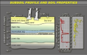
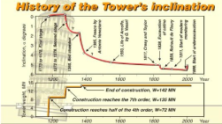
- Heavy load was put on north side to compensate settlement on the south.
- Soil extraction mass (38 m\(^3\)) under the north side using angled drilling.
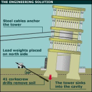
Other sinking problems


Deformation of soils
\(\sigma'=\sigma-u\)
- Large fill placement \(\longrightarrow\) \(\sigma \uparrow\) \(\longrightarrow\) \(\sigma' \uparrow\) \(\longrightarrow\) settlement
- Excavation \(\longrightarrow\) \(\sigma \downarrow\) \(\longrightarrow\) \(\sigma' \downarrow\) \(\longrightarrow\) heave
- Structure load \(\longrightarrow\) \(\sigma \uparrow\) \(\longrightarrow\) \(\sigma' \uparrow\) \(\longrightarrow\) settlement
- Lowering the water table \(\longrightarrow\) \(u \downarrow\) \(\longrightarrow\) \(\sigma' \uparrow\) \(\longrightarrow\) settlement
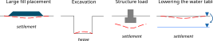
Consolidation
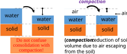
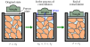
If we apply a load on...
- Fully impermeable soil: water cannot leave \(\longrightarrow\) no \(\longrightarrow\) no .
- Perfectly permeable soil: Water can leave \(\longrightarrow\) instantaneous \(\longrightarrow\) instantaneous .
Effect of drainage
Total settlement components
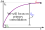
\(\color{blue}\delta_{pc}=\) Primary consolidation. Time dependent process.
\(\color{red}\delta_{sc}=\) Secondary consolidation. Also known as . Is a time-dependent process.
Recall: \(\varepsilon_v= \Delta V/ V_o \longrightarrow\) Volumetric strain
\( \begin{align} \varepsilon_v& = \Delta V/ V_o= \Delta H A /H_o A\\ &= \Delta H / H_o= \varepsilon_a \end{align} \)
\( \begin{align} \Delta e& = -\Delta V_v / V_s\\ &=- \Delta H A /[H_o A/(1+e_o)]\\ &=- \Delta H (1+e_o)/H_o \end{align} \)
Oedometer/consolidation test
Iterative process:
- Increase vertical load \(\Delta \sigma\)
- Wait until pore pressure is 100% dissipated (about 24 h).
- Measure the settlement \(\delta\) or void ratio \(e\).
- Plot \(\delta\) or \(e\) vs. time.
- Repeat 1-3 for each load increment.
- Plot cumulative stress vs settlement or void ratio.
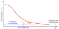
Overconsolidation ratio (OCR)
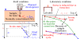
- Soils (clay) are a material \(\longrightarrow\) "have memory"
- The \(OCR\) give us information about the of the soil
- If we know some details about the geological history we can make sense of OCR values.
Participation question 7.1
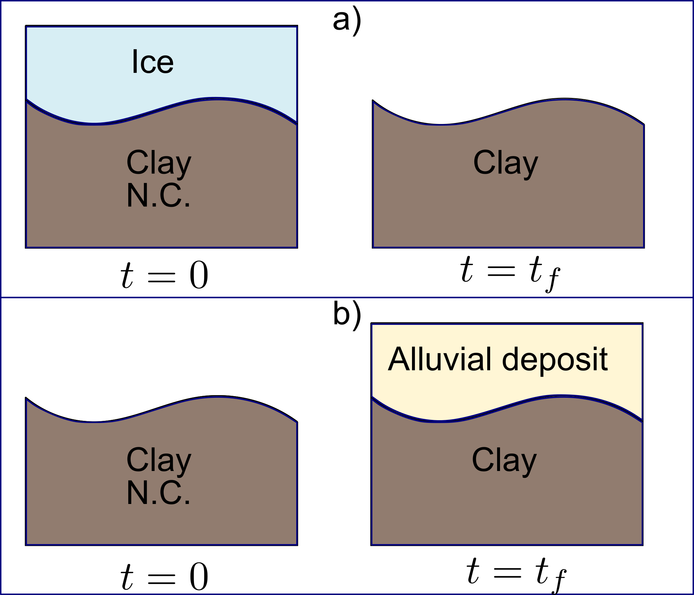
- Soil a and b are NC at time \(t=t_f\)
- Soil a and b are OC at time \(t=t_f\)
- Soil a is NC and b is OC at time \(t=t_f\)
- Soil a is OC and b is NC at time \(t=t_f\)
Idealized consolidation curve
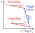
| Soil type | \(C_c\) (intact) | \(C_r\) |
|---|---|---|
| Boston Blue clay | 0.32 | 0.07 |
| Chicago clay | 0.42 | - |
| Louisiana clay | 0.33 | 0.05 |
| New Orleans clay | 0.29 | 0.04 |
\(C_c= PI/74\)
\(C_r=PI/370\)
Wroth and Wood (1978)
Wroth and Wood (1978)
Primary consolidation settlement
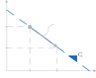
- Stress path moves along virgin curve
- Then:
\( \begin{align} \delta_{pc}&= - \cfrac{H_0 \Delta e}{1+e_0} \\ \end{align} \)\(\delta_{pc}= C_c \cfrac{H_0}{1+e_0} \log \left(\cfrac{\sigma'_{vf}}{\sigma'_{vo}}\right)\)
Example 7.1
Estimate the primary consolidation settlement for the clay in the profile below. The void ratio of the sand is 0.76 and the water content of the clay is 43%. The increase of vertical stress is estimated to be 200 kPa at the middle of the clay layer. Assume the soil above the water table to be saturated, \(C_c=0.3\), \(G_s=2.7\) for the clay, and \(G_s=2.65\) for the sand.
Clay: \(w=43\%\), \(S=100\%\), \(C_c=0.3\), \(G_s=2.7\), \(\Delta\sigma_v=200\unit{kPa}\)
\(\gamma_{sat,sand}=\dfrac{\gamma_w(G_s+e)}{1+e}=\) \(=\) \(\unit{kN/m^3}\) The statement says the sand above the water table is saturated too.
\(\gamma_{sat,clay}=\)
\(\dfrac{\gamma_w(G_s+e_0)}{1+e_0}=\) \(=\) \(\unit{kN/m^3}\) \(e_0=wG_s\) holds because the clay is saturated (\(S=1\)).
\(\sigma'_{vo}=\overbrace{\underbrace{\gamma_{sand}\,z_{sand}}_{\textcolor{red}{\text{sand}}}+\underbrace{\gamma_{clay}\,z_{clay}}_{\textcolor{red}{\text{clay}}}}^{\textcolor{red}{\text{total stress}}}-\underbrace{\gamma_w\,z_w}_{\textcolor{red}{\text{pore pressure}}}=\) \(=\) \(\unit{kPa}\) Pore pressure is measured from the water table, not from the ground surface.
\(\sigma'_{vf}=\sigma'_{vo}+\Delta\sigma_v=\) \(=\) \(\unit{kPa}\)
\(\delta_{pc}=\) \(=\) \(\unit{m}\) Use \(\log_{10}\), not \(\ln\): \(C_c\) is the slope per log cycle.
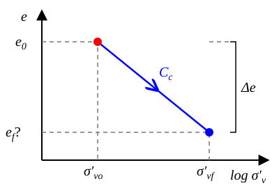
\(\Delta e=C_c\log\dfrac{\sigma'_{vf}}{\sigma'_{vo}}=\) \(=\)\(e_f=e_0-\Delta e=\) \(=\) We should be able to calculate this void ratio and the new density.
Case a: \(\sigma'_f<\sigma'_c\)
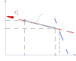
- Stress path moves along recompression curve
- Then:
\(\delta_{pc}= C_r \cfrac{H_o}{1+e_o} \log \left(\cfrac{\sigma'_{vf}}{\sigma'_{vo}}\right)\)
Example 7.2
Solve problem 7.1 but assuming the clay has \(OCR=4\), \(w=38\%\), and \(C_r=0.05\). All other values from Example 7.1 are unchanged.
Clay: \(G_s=2.7\), \(w=38\%\), \(OCR=4\), \(C_r=0.05\) The sand and the profile are unchanged from Example 7.1.
\(e_0=wG_s=\) \(=\)
\(\gamma_{sat}=\dfrac{\gamma_w(G_s+e_0)}{1+e_0}=\) \(=\) \(\unit{kN/m^3}\) Only \(w\) changed, but that changes \(e_0\) and \(\gamma_{sat}\) of the clay.
\(\sigma'_{vo}=\) \(=\) \(\unit{kPa}\)
\(\sigma'_{vf}=\sigma'_{vo}+\Delta\sigma_v=\) \(=\) \(\unit{kPa}\)
\(\sigma'_c=OCR\cdot\sigma'_{vo}=\) \(=\) \(\unit{kPa}\) The stress path never reaches \(\sigma'_c\): it stays on the recompression line.
\(\delta_{pc}=\) \(=\) \(\unit{m}\) \(C_r\) is much smaller than \(C_c\), so expect a much smaller settlement than 7.1.
Case b: \(\sigma'_f>\sigma'_c\)
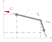
Stress path moves along recompression curve and virgin curve
Example 7.3
Solve problem 7.2 assuming \(OCR=1.2\). Determine the primary consolidation settlement.
Primary consolidation in layered soils
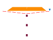
- Determine initial vertical effective stresses (\(\sigma'_{vo}\)) at the center of soil layers of concern. If thick layers, divide and find \(\sigma'_{vo}\) for centers of sub-layers.
- Extract sample at the center of each layer or sub-layer and run consolidation tests.
- Determine \(\sigma'_c\) and initial void ratio \(e_0=G_s w_0\) for layers of concern.
- Determine \(C_c\) and \(C_r\) for layers of concern.
- Determine \(\Delta \sigma\) due to external load at the center of each layer of concern.
- Compute settlement \(\delta_{pc,i}\) for each individual layer of concern considering initial high of each layer \(H_o\).
- Total settlement \(=\sum \delta_{pc,i}\)
Example 7.4
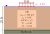
\(\sigma'_{vo}=\underbrace{(\gamma_{sat}-\gamma_w)}_{\textcolor{red}{\gamma'}}\,\underbrace{z_i}_{\textcolor{red}{\text{mid depth}}}=\) \(=\) \(\unit{psf}\) The water table is at the surface, so the whole layer uses \(\gamma'\).
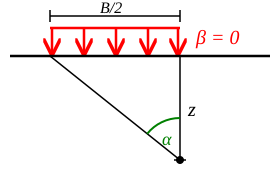
\(\alpha=\tan^{-1}\left(\dfrac{B}{2z}\right)\)\(I'=\underbrace{\dfrac{2}{\pi}}_{\textcolor{red}{\text{symmetry}}}\left[\alpha+\sin\alpha\cos\alpha\right]\) \(\alpha=\) \(=\) \(\unit{rad}\)
\(I'=\) \(=\) \(\alpha\) alone must be in rad; two half-strips with \(\beta=0\) give the \(2/\pi\).
\(\Delta\sigma_v=I'q=\) \(=\) \(\unit{psf}\) ksf to psf before multiplying.
\(\sigma'_{vf}=\) \(=\) \(\unit{psf}\)
Compare \(\sigma'_{vf}\) with \(\sigma'_c\) to pick the case.
\(\delta_{pc}=\dfrac{H_0}{1+e_0}\left(C_r\log OCR+C_c\log\dfrac{\sigma'_{vf}}{\sigma'_c}\right)\)
\(\delta_{pc}=\)
\(\delta_{pc}=\) \(\unit{ft}\)
| Layer | Top elevation (ft) | Bottom elevation (ft) | Midpoint elevation (ft) | Total stress (psf) | Pore pressure (psf) | Effective stress \(\sigma'_{vo}\) (psf) | \(\alpha\) (rad) | \(I'\) | Induced stress \(\Delta\sigma_v\) (psf) | Final vert. effective stress \(\sigma'_{vf}\) (psf) | Precons. pressure \(\sigma'_c\) (psf) | Check case | Partial settlement \(\delta_{pc,i}\) (ft) |
|---|---|---|---|---|---|---|---|---|---|---|---|---|---|
| 1 | 0 | 2.5 | 1.25 | 156.25 | 78.0 | 78.25 | 1.406 | 0.998 | 5989 | 6067 | 117.4 | b | 0.734 |
| 2 | 2.5 | 5 | 3.75 | 468.75 | 234.0 | 234.75 | 1.107 | 0.959 | 5757 | 5992 | 352.1 | b | 0.530 |
| 3 | 5 | 7.5 | 6.25 | 781.25 | 390.0 | 391.25 | 0.876 | 0.871 | 5225 | 5616 | 586.9 | b | 0.424 |
| 4 | 7.5 | 10 | 8.75 | 1093.75 | 546.0 | 547.75 | 0.709 | 0.766 | 4594 | 5142 | 821.6 | b | 0.346 |
| 5 | 10 | 12.5 | 11.25 | 1406.25 | 702.0 | 704.25 | 0.588 | 0.668 | 4009 | 4713 | 1056.4 | b | 0.284 |
| 6 | 12.5 | 15 | 13.75 | 1718.75 | 858.0 | 860.75 | 0.499 | 0.586 | 3513 | 4374 | 1291.1 | b | 0.233 |
| 7 | 15 | 17.5 | 16.25 | 2031.25 | 1014.0 | 1017.25 | 0.432 | 0.518 | 3105 | 4122 | 1525.9 | b | 0.192 |
| 8 | 17.5 | 20 | 18.75 | 2343.75 | 1170.0 | 1173.75 | 0.381 | 0.462 | 2771 | 3944 | 1760.6 | b | 0.157 |
| 9 | 20 | 22.5 | 21.25 | 2656.25 | 1326.0 | 1330.25 | 0.339 | 0.416 | 2495 | 3825 | 1995.4 | b | 0.129 |
| 10 | 22.5 | 25 | 23.75 | 2968.75 | 1482.0 | 1486.75 | 0.306 | 0.378 | 2265 | 3752 | 2230.1 | b | 0.105 |
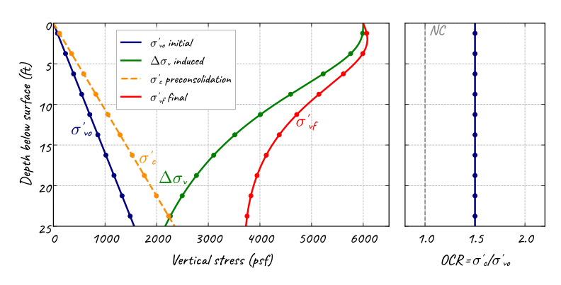
\(\sigma'_{vf}>\sigma'_c\) at every depth, so every sub-layer is case b.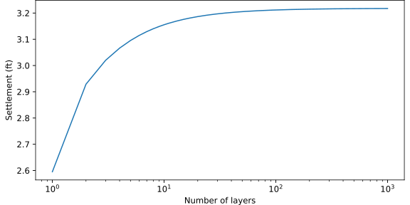